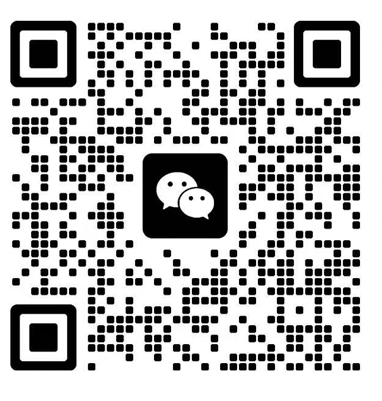

一个线下的行业跨界交流沙龙。10-15 人围坐一桌，没有主讲人、没有课件——每个人都是输出者，也是倾听者。杭州，几家合作咖啡馆轮流坐。
线上能传递信息，线下才能传递温度。坐在一张桌前，喝着咖啡，看着对方的眼睛——你才会说出那些真正想说的话。
这不是广告，是过往 9 场 Coffee Chat 留下的真实记录。照片、主题、人数、参与者的金句——全在这里。
数据来自过往活动的真实记录。不同主题专场由主理人独立设计和组织。
「你不需要把自己包装成另一个人。Coffee Chat 做的只是让本来就会聊到一起的人，真的坐到一张桌前。」
郭仔，2026 年裸辞后发起 Coffee Chat 项目。每场主题筛选 + 人数控制 + 现场节奏把控——是件体力活，也是一件相信「线下仍然值得」的事。
已办主题：一人公司专场 · 全女专场 · 自媒体专场 · AI 专场
过往嘉宾 / 参与者（节选）：上市公司 CFO、宠物行业年营收 2 亿企业主、几十万粉自媒体博主、国货美妆渠道负责人、AI 智能体独立创业者、电气工程师、Vogue 出来的艺人造型师、负责 6000 万粉丝帐号的短视频商业化操盘手……

报名表里问最关心的两个问题。回答不到位的会婉拒——同频的人，才值得坐在同一桌。
没有主讲人，没有 PPT。先自我介绍——你是谁、在做什么、为什么来。一两分钟，真实就好。
每个人花 2-3 分钟说出当前最卡的问题。在场的视角比你想象的丰富，问题说出口，答案就松动一半。
活动最后 30 分钟自由时间。找刚才最想深聊的人，1v1 把没说完的话继续说。
没有主讲人，没有 PPT。从破冰到 1v1 私聊，每一步都是为了让人真的开口。
每人一两分钟，说说是谁、在做什么、为什么来。不用准备稿子，真实就好。
围绕主题的五个核心话题展开开放式讨论。不是讲座，是一群人围着篝火聊天。
没有嘉宾和观众的区分，每个人都是输出者，也是倾听者。
这是 Coffee Chat 最有价值的环节。每个人花 2-3 分钟说出当前最卡的一个问题，在场所有人根据自身经历给反馈。
问题说出口的那一刻，答案就已经松动了一半。
前面是群聊，这段是私聊。找刚才最想深聊的人，把没说完的话继续说。
这段自由时间没有主题限制——关键是找到那个对的人。
THEMES
TIMELINE
FAQ
我们坚持做线下见面，因为有些话，隔着屏幕说不出来。
坐在一起，喝杯咖啡，看着对方的眼睛，你才会说出那些真正想说的话。
线上能传递信息，线下才能传递温度。
Coffee Chat 会一直做下去——只要还有人愿意来聊。